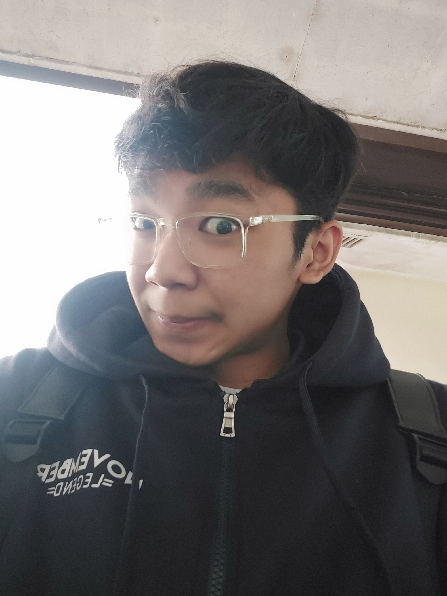

IT Sophomore & Freelancer
I'm an IT student and freelancer with a deep passion for technology that started when I was young. My curiosity grew from exploring skills, software, and digital tools on my own, turning that early interest into a drive to explore, experiment, and build.
Now I'm exploring various areas of tech, and I'm discovering my real passion lies in cybersecurity, particularly in OSINT investigation. It’s a field that challenges me to think critically, stay curious, and continuously learn.
I believe in taking initiative — when you see a problem or an opportunity, dive in, build, and experiment. Test your ideas, learn from mistakes, and keep improving along the way. Every step is a chance to grow and make a difference.